This document describes the updates and fixes made to Alpha Anywhere since its initial release.
To see the 'What's New in V12' document (which describes all of the new features in Alpha Anywhere's initial release) please click here.
Please note that Alpha Anywhere patches are only available to users with
a current subscription.
You can verify your subscription status from within Alpha Anywhere by
going to Help, About, or by clicking this link shown here (https://activation.alphasoftware.com/subscriptionStatus.aspx).
If you install an update for which your subscription is not entitled,
you will need to uninstall the update and rollback to an older version
that you are authorized to use in order to continue using Alpha
Anywhere.
In addition to the official updates that Alpha Software makes available from time to time (which are described in this document), we also make available our internal pre-release builds that allow you to see what features have been added and what bugs have been fixed since the last official update. The features and bug fixes in the pre-release build will be part of the next official update. To see the pre-release notes, please click here.
Application Server - OpenSSL - 'HeartBeat' Bug - The Application server now uses Version 1.0.1g of the 3rd party OpenSSL library which Alpha Anywhere uses. This updated library patches the so called 'HeartBeat' vulnerability in the OpenSSL library.
UX Component - List Control - Group Summaries - If you are using the {dialog.object}.groupSummary() method in a Group header or footer, you will need to edit the component and change the method to
this.groupSmmary()
The .groupSummary() function is now a method of the List object. Previously is was a method of the UX object.
Application Server - Warning. A
change has been made to the web security system to load the security
much faster. This change alters one of the published security files. If
a project is published from the latest pre-release to an older
application server, the older application server will report a 500
internal server error as it won't be able to read the new file.
The application server should be the same build
as the development program.
| UX and Grid Component | E-mailing a Report |
A common pattern in both the UX and Grid
component is to place a button on the component
to print a Report and display the Report in a
window, div or TabbedUI pane. However, instead
of displaying the Report, you might want to send
it as an email. The Action Javascript action to Print a Report has an option to call an Xbasic function when the Report has printed. In this video we show how you can use this option to e-mail the report using the Mandrill e-mail service. (Note: The sample function prototype shown in the video is only available in build 4241 or above.) Watch Video - Part 1 Watch Video - Part 2 |
| UX Component | Cross-domain Ajax Callback |
A cross-domain Ajax callback is a callback that
takes places to a server that is in a different
domain than the domain from which the component
was loaded. In this video we show how a callback is made to the Apple iTunes store and we contrast the difference between making the callback directly to the Apple site versus making a callback to the Alpha server first and then having the Alpha server make the call to the Apple site. Watch Video - Part 1 Watch Video - Part 2 Watch Video - Part 3 Download component |
| UX and Grid Component | Using CSS Icons from the Font-Awesome Icon Font Library |
The Font-Awesome CSS Icon library (http://fontawesome.io) is bundled with Alpha
Anywhere and can be used in the UX, Grid and TabbedUI
components. In this video we show how to use the Font-Awesome font library and CSS icons in general. Watch Videos - Part 1 Watch Videos - Part 2 Watch Videos - Part 3
|
| UX and Grid Component | Using 3rd Party Icon Font Libraries (CSS Icons) |
There are many 3rd party Icon Font (CSS Icons)
libraries that can be used with Alpha Anywhere.
In this video we show how you can go to a source
of icon fonts (http://www.fontello.com/)and
download a font library that can then be
installed into Alpha Anywhere. Watch Video |
| UX Component | Using CSS Icons in a List - List Menus |
A common pattern in mobile applications is to
use a List control as the menu. This list
control is then displayed in a Panel Window that
animates in from the left side of the screen.
Icons are typically displayed for each menu
choice. CSS Icons are ideal for these types of
icons. In this video we show how a List can be
easily configured to display a menu. Each item
in the List has a CSS Icon in it. Watch Video |
| UX Component - Mobile Applications | Creating a 'Split-View' using the Pre-Defined 'Split-View' Template |
A common pattern in mobile application is the
'split-view' which shows a menu on the left and
a work area on the right. On a phone, were space
is limited, the menu is hidden and only shown on
demand, but on a tablet, the menu is always
shown. In this video we show how you can quickly
create a UX component that implements a
split-view by selecting one of the pre-defined
'split-view' templates. We then explain some of
the concepts behind the component. Watch Video - Part 1 Watch Video - Part 2 Watch Video - Part 3 |
| UX Component | Split Buttons |
A split button is displayed as a regular button
and a smaller button with a dropdown icon. You
can have different event handlers for the
dropdown button portion of the button and the
regular portion of the button. When space is
constrained, you can use a single split button
to perform many tasks, while still giving the
user single click access to the last selected
task. In this video we show how you can use split buttons in your applications. Watch Video - Part 1 Watch Video - Part 2 Watch Video - Part 3 Download components |
| UX Component | List Control - Lookup Columns |
The List control allows you to define 'lookup
columns' where the data in the column is 'looked
up' either by calling a Javascript function
(that you define), or by looking up the value in
some other List. A typical use case for this is a List that shows Order Details. Each row in the list has a 'productId' field. You would like to display the product name for each product id. In this video we show how to define Lookup Columns in a List. Watch Video Download Component (You will need to change the connection string for both lists to point to the sample Northwind database). |
| UX Component | List Control - Client-side Grouping and List Navigator |
Group breaks can be inserted into the List
control. The group breaks can be 'server-side'
group breaks, or 'client-side' group breaks. The
advantage of 'client-side' group breaks is that
they can be dynamically applied to the data in
the List. That means you can easily switch from
grouping the data by 'Lastname' to grouping by
'City', etc. You can also display summary values
in the group headers and footer. For lists that have group breaks (regardless of whether the group breaks were computed server-side or client-side), you can also display a List Navigator, which allows the user to easily scroll a long List. In this video we give an overview of client-side group breaks and the List Navigator. Then, we go into depth on setting up client-side grouping using Action Javascript (to apply the group breaks after the List is initially rendered) and in the List definition itself (so that when the List is initially rendered, the group breaks are shown). We also show how summary data can be inserted into a List header or footer. Watch Video - Overview Watch Video - Part 1 Watch Video - Part 2 Watch Video - Part 3 Watch Video - Part 4 Download components |
| UX Component | List Control - Using Native SQL For List Data |
When you create a List control that is based on
SQL data, you must use Alpha Anywhere 'portable'
SQL. If you want to base you List on 'native'
SQL (which includes stored procedures), you must
define a 'custom' data source for the List and
then in the Xbasic function that returns the
data, you can use your native SQL. In this video we show how this can be done. Watch Video - Part 1 Watch Video - Part 2 Download Component |
| UX Component | Drag and Drop - Dragging Rows from a Source List to a Target List |
A common design pattern in applications is to
allows users to drag items from one List to
another. The Alpha Anywhere Javascript library contains powerful drag and drop functions that allow you to easily enable this type of functionality. In this video we show how you can create a UX with two List controls and drag rows from one List to the other. Watch Video In this video we explain the Javascript code that enables this functionality: Watch Video - Part 1 Watch Video - Part 2 Watch Video - Part 3 Watch Video - Part 4 Download component Addendum. The previous videos show drag/drop on a List using a mouse. However, the previous examples do not work on some mobile devices because on iOS (for example), the 'up' event fires on the element that initiated the 'down' event (and not on the element on which the up event took place, as you might have expected). The next video explains how the component shown in the previous videos can be slightly rewritten so that it works on a mobile device (and as a bonus, also allows re-ordering of the rows within a List). Watch Video Download component |
| UX Component | List Control - Range Searches |
The List control has a built-in action in Action
Javascript to filter the List. An Ajax callback
to the server is made and the query that
populates the List is executed with a filter
that is computed based on values in the search
control on the UX. Now, you can easily perform
'range' searches, as shown in this video. NOTE: Another way to perform a 'range' search is to use a single search control, turn on the 'Allow QBF' option and then enter the search value as a range using the .. (two dots) synax. For example, to search for quantity between 10 and 20, you would enter 10..20 in the search control. Watch Video |
| UX Component | Absolute Layout Container - Save as PDF |
The Absolute Layout container in a UX allows you
to place controls at absolute locations,
typically using a bitmap image of a form as a
background. You can use an action in Action
Javascript to save the contents of the Absolute
Layout container as PDF file and then download
the PDF to the client, or call some Xbasic
function to process the PDF file. This video shows how this is done using Action Javascript. Watch Video |
| UX Component | Internationalization - Language and Text Dictionary Tags |
Language or Text Dictionary tags are typically
used to internationalize the strings in a UX
component. However, adding the tags to a large
component can be tedious. This video shows how
the Internationalization Helper can be used to
automate this task. Watch Video |
| UX Component | Client-side Formatting for Numeric Data and Templates |
You can use format directives in the Templates
that the UX component List control uses to
display data. This allows you to easily format
numbers (for example show thousands separated by
commas with 2 decimal places) and apply
templates to strings (for example, show
'5551234567' as (555) 123-4567) The video shows how you can insert a format directive into a List template using the Number Format Genie. Watch Video |
| UX Component | Using a List Control to Display Detail Information (in Field/Value Pairs) for a Record |
A common pattern in mobile applications is to
display a List of records and then when the user
clicks on a row in the List to display a list of
fields and corresponding values for the row the
user clicked on, with one field/value pair per
line. In this video we show how a second List can be used to display the field/value pairs and how this List can be dynamically populated when the user clicks on a row in the main List of records Watch Video - Part 1 Watch Video - Part 2 Download component Addendum: In this video we show how you can enhance the UX by showing a message in the Detail List when no record is active in the primary List. Watch Video |
| UX Component | Dynamically Populating a List with Data from a SQL Database |
Populating a List dynamically with data from a
SQL database is a very common pattern in
application development. In this video we show
how this is easily done. In the video we show how a List control on a UX can be populated with customers in a country. The country is selected from a dropdown control. Watch Video - Part 1 Watch Video - Part 2 Download component |
| UX Component | Transform Data Type of List Data |
By default, the data type for each field in a
List is a Javascript string. In some cases you
might want the data type for a column to be a
Javascript date or number object. A benefit of transforming dates into true Javascript date objects is that you can then use date formatting in the template for the List. For example, when displaying a field called OrderDate in the the List, instead of specifying {OrderDate} in the template, you might specify {OrderDate:date('yyyy-MM-dd')} Watch Video Download component |
| UX Component | List Virtualization - Optimizing the List for Large Number of Rows |
When you are working with List controls that
contain a large number of rows (say several
thousand rows), it is advisable to turn on the
List's 'virtualization' feature. With
virtualization turned on, the List will only
render a small number of rows at a time (the
visible rows and some additional rows above and
below the visible rows). Turning on List Virtualization will dramatically reduce both the time taken to load the List and the amount of memory consumed by the List. Watch Video Download component |
| UX Component | List Control - Modeless Preview Window in List Builder |
When you are designing a List control in a UX
component, the List Builder is a modal dialog.
This means that you need to first close the List
Builder before you can preview the UX component
to see how your List control looks. However, while you have the List Builder open, you can click the Preview button to open a modeless preview window which you can keep open whiel you are working in the List Builder. Simply clicking on the Preview button will quickly refresh the preview shown in the window. Watch Video |
| UX Component | Action Javascript - Merge Data into Template |
Alpha Anywhere has a very powerful client-side
template engine that allows you to merge
Javascript data into templates to produce HTML
output that can then be displayed on your
component. This functionality is exposed in the 'Merge data into client-side template' action in Action Javascript. NOTE: Other videos explain the template syntax in more detail. Watch Video Download Component |
| UX Component | Using the Template Tester to Help Design Templates - Tutorial on Template Syntax |
The client-side template engine in the UX
component is very powerful, but to be able to
take full advantage of its power it is necessary
to understand the syntax used in the templates. In this video we demonstrate how to use the Template Tester and we walk through the various examples that are built into the Template Tester. The video gives an extensive overview of the template syntax. Watch Video - Part 1 Watch Video - Part 2 Watch Video - Part 3 Watch Video - Part 4 Watch Video - Part 5 Watch Video - Part 6 Watch Video - Part 7 Watch Video - Part 8 |
| UX Component | List Control - Column Resizing |
The List control allows you to specify that
columns in the list are resizable. This video shows how you can set the resizable property at the individual column level. Watch Video Download Component |
| UX Component | Destroy Child UX Component |
A common pattern when building large mobile
applications is to break the app into multiple
sub-component which are called from a master
component. Once the child component is no longer needed, it is useful to be able to delete the component from memory in order to conserve the limited memory available in the browser. The {dialog.object}.destroyChildComponent() method can be used to delete child UX components from memory, as shown in this video. Watch Video Download Components |
| UX Component | Generate a component at run-time using Xbasic |
In most cases, the UX components that your
application uses will be built at design-time.
However, there may be use cases for UX
components that are generated dynamically at
run-time using Xbasic. The a5wcb_createDialogUsingXbasic() allows you to generate a UX component using Xbasic. In this video we show how a button on a UX makes an Ajax callback to generate a UX on the fly. Another button then opens this dynamically generated UX component. Watch Video Download Component |
| Code Editor | Highlighting Opening and Closing 'Pair' Delimiters |
When editing Xbasic or Javascript code, html,
JSON etc. it is often helpful to be able to see
the start and end of different 'pairs'. For
example in an Xbasic function call, highlighting
the opening an closing parentheses. Or in a
Javascript function, highlighting the opening
and closing curly braces. In some HTML text, the
opening and closing tags (e.g. , ,
, etc.) |
| UX Component | Using the List Scroller to Move Through the Rows in a List |
When working with virtualized Lists, it is
possible to have Lists that have a very large
number of rows. Navigating a very large List by
drag scrolling on the List body could be
cumbersome. To facilitate navigating large
Lists, a 'List scroller' can be added to the
List. The scroller shows a message while you are
dragging on it showing which row in the List
will be shown if you were to stop dragging on
the scroller. Using the scroller, you can very quickly navigate to any row in the List. The List Scroller is not limited to virtualized Lists. It can also be used with non-virtualized Lists. In this video we show how to add a List Scroller to a List and we show how you can quickly navigate to the last row in a virtualized List that contains 100,000 row of data. Watch Video Download component |
Application Server - OpenSSL - 'HeartBeat' Bug - The Application server now uses Version 1.0.1g of the 3rd party OpenSSL library which Alpha Anywhere uses. This updated library patches the so called 'HeartBeat' vulnerability in the OpenSSL library.
Postgres ODBC Driver - Version 9.03.01.00 - Bugs - Postgres has introduced a bug in the latest version of their ODBC driver that affects the Grid component. The only solution is to roll back to a previous version of the ODBC driver, or turn off write conflict checking for all updateable fields in the Grid.
Specifically, the driver fails when an expression is
included in the WHERE clause that tests a bound variable
for NULL-ness.
Here is a summary of the bug:
Consider the following sample Interactive window session:
dim args as sql::arguments
args.add("tags", "rain, snow")
?cn.execute("select * from test_table where :tags is
null", args)
This will fail and the error reported is:
The PostgreSQL ANSI ODBC driver reports 42P18 - ERROR:
could not determine data type of parameter $
Update: A work around has been added in the SQL generated by the Grid Component so that Grids will work with the 9.03.01.00 ODBC driver.
AlphaDAO - Postgres - Connection String - Changes
In Default Values Set By the Alpha Anywhere PostgreSQL
Extension Driver
The Alpha Anywhere PostgreSQL extension driver now
defaults the following connection string attributes:
Protocol=7.4-1
UseServerSidePrepare=1
Previously only the following were set:
B8=1 // B8 = UnknownsAsLongVarchar (rather than varchar)
B9=0 // B9 = Bools as Char
ByteaAsLongVarBinary=1
If these defaults do not work for your installation for
some reason, you will need to create and ODBC DSN and
use the Alpha Anywhere ODBC driver.
Setting Protocol=7.4-1 has been demonstrated by one
customer to dramatically improve performance with
PostgreSQL 9.3 on large batches of inserts (about 25%).
Reports - HTML Reports - Export to PDF, Excel, Word - International Dates - If your date format was set to dd/mm/yyyy then if you printed an HTML report that used dates in its filter expression and then you clicked a toolbar icon to export the report to PDF, Excel, or Word, the date filter was not applied correctly.
Reports - Quick Report Genie - Summary Fields - Fixed a bug where the Genie would crash if you edited a field that had summary values.
UX Component - Responsive Design Genie - Absolute Layout Containers - Textbox Controls with In-Place Buttons - Fixed an issue that caused the textboxes to not display.
TabbedUI Component - HTML Reports - Reports with Parameters that are Set to Prompt at Runtime - If you had an HTML report that was set to prompt for parameters at runtime, the first time you ran the report, the report would render correctly. But if you tried to run the report a second time (by entering new parameter values, but NOT first closing the Tab Pane), the report did not render.
UX Component - AbsoluteLayout Container - Text Control - Fixed a bug with text controls in an AbsoluteLayout container which caused controls that followed the text control to render in the wrong position.
Reports - Export to Word - In some cases, numeric fields in a report would not export correctly to Word.
UX Component - Absolute Layout Container - PanelOverlay Container - Content in an AbsoluteLayout container that was inside a PanelOverlay container did not render correctly.
Web Applications - Security Framework - MySQL - Under certain circumstances using MySQL tables for web security, deleting a user could fail. This has now been fixed.
Web Security Framework - CSS Icon Fonts - The new iOS7 and Android style sheets use icon fonts. The images were not displaying if the security framework was enabled because the font files did not have the appropriate security settings.
The web security framework will now recognize the the
new font files for CSS icon fonts. The page security
must be opened from the web security menu to add the new
types to the page security. Then publish any page to
add the new settings to security. If the Security cache
lifetime is set to 0, the application server must be
stopped and restarted to apply the changes.
UX and Grid Component - Edit-Compo - Populate using Ajax Callback - If an edit-combo is dynamically populated using an Ajax callback, previously, the Order By property was ignored and the list was automatically ordered by the columns in the display list. Now, the order by clause is honored. Many SQL databases do not allow an order by clause on columns that are not in the select list. Therefore, you may need to ensure that the columns in your order by clause are also in the list of fields to display.
Grid Component - Font-Awesome - Live Preview - When you did a Live Preview from a Grid component that used Font-Awesome CSS Icons, the Font-Awesome files were not getting published to the Live Preview folder.
Layout Table Reports - Absolute Position Cell - Calculated Fields - If you created a cell in a Layout Table report that used Absolute Positioning and placed calculated fields in the absolute layout, the calculated fields were not shown in the Absolute Layout editor when you opened the editor a second time to make edits to the cell.
Web Applications - Report Server - SQL Reports - Under some circumstances, a report based on a SQL database would fail to print when using the Report Server. The error message was reporting that the connection string could not be resolved.
UX Component - Signature Capture Control - Tab Control - If a signature capture control was placed in a tab pane that was not initially visible, when the tab pane was made visible the control did not work.
Desktop Applications - Security - If you set permission on a .dbf table to disallow edits, changes or deletes, the permissions were not being honored.
UX Component - Server-side Save Records to Table(s) Action - User Defined Events - Aborting the Action - The help in the function prototype for the various events (such as beforeRecordInsert, beforeRecordUpdate, etc.) describe that you can abort the action by setting
rtc.abort = .t.
The help is wrong. It should have read:
e.rtc.abort = .t.
e.rtc.abortReason = "Reason"
Desktop Applications - Forms - Embedded Browses - Entering New Records - There was a cosmetic issue during data entry into a one-to-one child table in an embedded browser. Consider the following set:
TableMaster===>TableChild1---->TableChild2
If you were entering a new record into the embedded browse and you entered a value in the field in TableChild1 that links TableChild1 to TableChild2 and there was no matching record in TableChild2 (in other words, you were creating a new record in both TableChild1 and TableChild2, rather than the more common case of a new record in TableChild1 that links to an existing record in TableChild2), then as soon as you tabbed out of a field in TableChild2, the data you entered would disappear. When you saved the record, the data you entered would then show up. This is fixed.
UX and Grid Component - Edit-Combo - Static Choices - The 'Filter method for required selection' property was not shown if the choices were set to 'Static'. (This property was shown for 'Dynamic' choices).
On Firefox, if you do not set this property to 'Progressive' and you have set the 'User must select from list' property to true, then you will not be able to hit the tab key to tab out of the control to the next control in the form.
Xbasic - Passing Function Arguments By Referencing - Array Indexers - If a numeric value was passed into a function and then that value was as an array indexer, it failed. For example:
function myFunc as c (arr as p, byRef myIndex as n)
dim result as c
result = arr[myIndex].name
myFunc = result
end function
However, if you did this, it would have worked:
function myFunc as c (arr as p, byRef myIndex as n)
dim result as c
result = arr[myIndex.value].name
myFunc = result
end function
Desktop Applications - Forms and Browse - Lookup Field Rules - Display a Dropdown - Fixed an issue when you could not edit entries in a control that was defined as a lookup.
Calendar Component - TabbedUI - If you had a TabbedUI component that opened multiple calendar components, then buttons in the popup UX component would only render in the last calendar component that was opened.
UX Component - Signature Capture Control - Data Binding to .DBF Tables - Fixed an issue in the signature control if the UX was bound to .dbf tables.
Grid Component - Tree Control Navigator - Session Variables in Custom SQL Statement - If you specified a custom SQL statement for any level of the tree and used session variables in the WHERE clause, the query would fail.
Grid Component - Search Part - Cascading Dropdown Boxes - 'Explicit' Option - If the 'Explicit' option was used for defining the filter for the child Dropdown box, the child Dropdown was not populated correctly when its parent's value was changed. This bug only happened for controls in the Search part.
Grid Component - Radiobutton and Checkbox Controls - 'Not in List' Rule - Numeric Fields - The 'Not in List' property was not exposed for Numeric fields.
UX Component - Map Control - Bulk Add Marker - If the latitude sub-series name in the Data Series was not called 'latitude' and the longitude sub-series name was not called 'longitude' the action would throw an error.
UX Component - RadioButton and CheckBox Controls - Render as ButtonList Option - Events - When you check the property to render a RadioButton or CheckBox control as a ButtonList, the standard Javascript events that can be defined for a RadioButton or CheckBox are meaningless. ButtonsLists expose two Javascript properties:
Therefore, when you check the 'Render as ButtonList' property all of the standard Javascript properties in the Property Sheet are hidden and the onClick and onSelect events, which are standard for ButtonLists are now exposed.
UX Component - Panels - Internet Explorer V11 - Fixed some issues with Panels not working correctly under IE11.
Security Framework - Security Log in - The
security log in process no longer checks user id and
password values to see if they meet validation rules.
The process will now attempt to log in with any
non-blank value. This check is now only performed when
user credentials are created or edited.
Xdialog - UpperCase Only Input Control - A new directive, ^, allows you to specify that an input control will only accept uppercase characters. If the user types in a lowercase character, it will convert to uppercase. Previously you could have created a template to only accept uppercase, but that would have prevented the user from entering non-alphabetic characters.
For example:
ui_dlg_box("Convert to Upper","[%^%.10name]")
Using a template:
ui_dlg_box("Convert to Upper","[%X=LLLLLLLLLL%.10name]")
UX Component - Additional Resource Files Property - A new property has been added to the UX builder that allows you to specify the names of any additional resource files. These are files in the Web Project folder that you want to ensure get published every time you publish the UX component.
This property is in the 'Other' section of the UX Properties pane in the UX builder.
Additionally, if this component has been specified as the 'initial' component in a PhoneGap project then these files are automatically copied into the PhoneGap project that is submitted to PhoneGap build.
The files entered into this list must be in the form of a cr-lf list of relative filenames (relative to the Web Project folder).
UX Component - List Control - Scrollers - List scrollers allow you to quickly navigate to a particular record in a List. You can drag on the scroller in much the same way that you drag on the 'thumb' portion of a scrollbar in a desktop application. When you stop dragging on the scroller, the corresponding row in the List is brought into view.
Watch Video
Download component
While you are dragging on the scroller, a message is displayed showing what record would be shown if you were to stop dragging. The contents of the message is completely customizable. It is actually a standard HTML List template and it supports all of the template features for List controls. The message can display fields from the data in the List.
The List scroller is particularly useful for virtualized Lists because a virtualized List can contain a very large number of rows. Using the scroller you can quickly navigate to any row in the List without having to drag scroll one screen at a time.
However, List scrollers are not limited to virtualized Lists. They can also be used with non-virtualized Lists.
(See below for information on Virtualized Lists).

To turn on the List scroller, check the 'Has scroller' property on the List Properties pane in the List builder.
You can use placeholders for any field in the List in the template.

UX Component - Customizing the Scroll Indicator - When you are drag scrolling on a List (or any container that supports drag scrolling), scroll indicators are displayed. You can now customize the appearance of these scroll indicators (or even turn them off).
To customize the scroll indicator settings, click the smart field for the 'Custom scroll indicator settings' property.
UX Component - List Control - Fixed Headers and Footers - List controls have always supported 'data' headers and footers. Data headers appear before the first row of data (below the List titles) and after the last row of data. When the List is scrolled, the data header and footer can scroll out of view.
Fixed headers and footers, on the other hand, appear above and below the List and are always visible regardless of how the List has been scrolled.
To turn on fixed headers and footers, check the appropriate property in the List Properties pane in the List builder.
TIP: To insert controls in the header or footer (e.g. input controls, buttons, etc), add the control to the UX and wrap then in an 'Injectible' container. The inject the contents into the header or footer as shown in the image below. When you open the header or footer editor you will see a hyperlink that generates the required code.

Code Editor - Highlighting - The code editor now highlights opening and closing parentheses, curly braces html tags (when editing HTML text) and long string delimiter (e.g. <<%txt% .... %txt%).
In the image below, the long string has curly braces (it is a JSON object). Because the long string uses the special
%html% delimiter, the curly braces are highlighted.

When the braces are highlighted, the right click menu has a new option - Select Pair... - which selects all of the text between the opening and closing brace.

The following keyboard shortcuts can be use when a 'pair' has been identified (i.e. the editor is highlighting the start and end of a pair.
Grid Component - Action Scripting - Send e-mail Action - Mandrill - Now supports the Mandrill service as a method for sending the e-mail.
Grid Component - Action Scripting - Send e-mail Action - Dynamically Computing Message Body -
The message body can now be dynamically generated using an Xbasic function.
UX Component - Action Scripting - Send e-mail Action - A new action is now available in Action Scripting to send an e-mail. This is the same action that is exposed in server-side Action Scripting in the After Dialog Validate server-side event handler.
CSS Editor - Source View - Quick Navigator - When you are editing CSS in the Source tab of the CSS editor, the toolbar now has a quick selector that allows you to quickly jump to any rule. For example in the screenshot below, clicking on the down arrow icon in the status bar has opened a menu showing all of the selectors in the code being edited.

JSON_standardize() function - Takes non-standard JSON and standardizes it. Also corrects for trailing commas in the JSON (which are illegal)
For example:
?json_standardize("{name: 'Fred', age: 21}")
{
"name": "Fred",
"age": 21
}
?json_standardize("{name: 'Fred', age: 21,}")
{
"name": "Fred",
"age": 21
}
UX Component - {dialog.object}.destroyChildComponent()
Method - A common pattern when building large mobile
applications is to break the app into multiple
sub-component which are called from a master component.
Once the child component is no longer needed, it is
useful to be able to delete the component from memory in
order to conserve the limited memory available in the
browser.
The {dialog.object}.destroyChildComponent() method can
be used to delete child UX components from memory.
Watch Video
UX Component - List Control - Column Resizing - You can now specify that individual columns in the List can be resized by the user at run-time. To specify that a column can be resized, check the 'Resizable column' property.
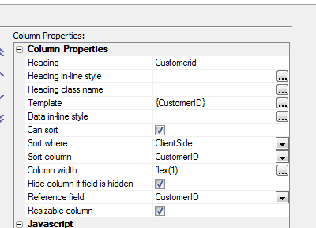
UX Component - Customize Scroll Indicator - List, Panel and Containers - You can now customer the scroll indicator for List controls, Panels and Containers. By default the scroll indicator for vertical scrolled content is on the right edge and the for horizontally scrolled content, it is on the top. However, you can set the position to left or bottom, and you can control the class and various offsets.
In the image below, the scroll indicator is shown on the left edge with a 20px offset.

To open the scroll indicator customization dialog, click the smart field button:
Client-side Templates - Allows you to merge complex Javascript data in richly formatted templates to produce HTML that can be displayed in a UX or Grid component.
NOTE: A powerful tool is available when you working with templates. See section below: 'Using the Template Tester'
NOTE: Templates use the A5.u.template.expand() Javascript function in the Alpha Anywhere Javascript library. See section below 'The A5.u.template.expand() Function'
The basic idea of client-side templates is that you have some Javascript data - typically a Javascript object, or an array of Javascript objects, and a template (with placeholders for data) and you merge the data into the template.
For example, take the following trivial example. Say you have a Javascript object defined as follows:
var data = {Firstname: 'Fred', Lastname: 'Jones'};
And a template defined as follows:
var template = 'Hello {Firstname} {Lastname}';
When you merge the data into the template, you will get a string that looks like this:
Hello Fred Jones
Technical Note: The syntax for the template is identical to the syntax for free-form templates in the List control and for individual columns in a columnar List control.
Of course, in a real application the template will likely also include HTML markup. For example:
var template = 'Hello {Firstname} {Lastname}';
Array Data
The data for the template can be an array of objects, in which case the template will be expanded for each object in the array.
For example:
var data = [
{Firstname: 'Fred', Lastname: 'Jones'},
{Firstname: 'John', Lastname: 'Smith'},
{Firstname: 'Sally', Lastname: 'Rome'}
];
Using the same template as above, this will produce this output:
Hello Fred Jones
Hello John Smith
Hello Sally Rome
Object Data
The data object can include sub-objects. For example
var data = {Firstname: 'Fred', Lastname: 'Jones', Address: { Street: '123 Main St', City: 'Boston', State: 'Ma' }};
The template to consume this data could then be defined as follows:
var template = 'Hello {Firstname} from {Address.Street} in {Address.City}';
Alternatively, the template could be defined as follows:
var template = 'Hello {Firstname} from {Address} {Street} in {City} {/Address}';
Notice that the template includes {Address} and {/Address}. Inside the {Address} block, the placeholders do not need to be fully qualified. You can use {Street}, rather than {Address.Street}
The {Address} placeholder is referred to as a 'scope' placeholder.
Both of these templates will produce the same output:
Hello Fred from 123 Main St in Boston
Array Data and Object Data Combined
In the Array Data example above, the data was in the form of a Javascript array. In many cases it will be preferable have the data as an object. So, instead of specifying the data for the template as:
var data = [
{Firstname: 'Fred', Lastname: 'Jones'},
{Firstname: 'John', Lastname: 'Smith'},
{Firstname: 'Sally', Lastname: 'Rome'}
]
You could specify it as:
var data = {
Customers: [
{Firstname: 'Fred', Lastname: 'Jones'},
{Firstname: 'John', Lastname: 'Smith'},
{Firstname: 'Sally', Lastname: 'Rome'}
]
}
The template to consume this data could then be defined as:
var arr = [];
arr.push('{Customers}');
arr.push('Hello {Firstname} {Lastname}');
arr.push('{/Customers}');
var template = arr.join('\n');
NOTE: The template is created by pushing individual lines into a Javascript array and then joining the array. This is simply a convenient technique for creating long strings in Javascript.
This template will produce this output:
Hello Fred Jones
Hello John Smith
Hello Sally Rome
Notice that since the {Firstname} and {Lastname} placeholders are nested inside the {Customer}...{/Customer} scope placeholders, it is not necessary to use fully qualified placecholders (e.g. {Customer.Firstname}).
The benefit of placing your array as a property of an object, rather than at the top level, is that you can then use the {*header} and {*footer} constructs, and you can compute summary information (such as the number of items in the array, an average value of a field in the array, etc).
Client-side Template Syntax
There are a rich set of template directives that make templates both extremely powerful and also easy to use.
{scope} Placeholders
If the data passed to the template expand function contains nested objects, or arrays, you can use special {scope} placeholders, where scope is the name of nested object or array.
For example, consider the following simple data object:
{name: 'John Smith', address: {street: '1 Main', city: 'Boston'}}
The template to print this could be:
{name}
{address.street}
{address.city}
or more conveniently, a {scope} variable could be used:
{name}
{address}
{street}
{city}
{/address}
The {scope} variable acts like an 'with' statement in Xbasic.
Within the {scope}, it is not necessary to fully qualify the placeholder names.
In the case where the data contains a nested array, the {scope} variable indicates that the template should loop over the rows in the array.
For example, consider this data object:
[
{name: 'John Smith', children: [{name: 'Griffin'}, {name: 'Callie'}]},
{name: 'Toby Mohan, children: [{name: 'Kyle'}, {name: 'Katy', name: 'Luke'}]}
]
And the following template:
{name}
Which will produce this output:
{[value]} Placeholder
The {[value]} Placeholder is a special placeholder to use when looping over arrays of values, rather than arrays of objects.
In the previous example, the data was specified as:
[
{name: 'John Smith', children: [{name: 'Griffin'}, {name: 'Callie'}]},
{name: 'Toby Mohan, children: [{name: 'Kyle'}, {name: 'Katy', name: 'Luke'}]}
]
The nested array is an array of objects.
However, the data could have been specified as:
[
{name: 'John Smith', children: 'Griffin','Callie'] },
{name: 'Toby Mohan, children: ['Kyle', 'Katy','Luke']}
]
In this case, the nested array is an array of values, not of objects.
To emit the data in the array, the template must use the special {[value]} placeholder. For example:
{name}
NOTE: The [value] field can be followed by
formatting directives, just like any other field. For example:
{[value]:number('$#,###.00')}
Missing Data - Alternative Text - The || Directive
In some cases the data you pass in to the template expander will have missing data. For example, consider the following data object:
{
employees: [
{firstname: 'Fred', lastname:
'Smith', city: 'Boston'},
{firstname: 'Laura', lastname: 'Linneker'}
]
}
The 'city' property has been specified for the first object in the 'employees' array, but not the second.
{employees}
Employee name: {firstname} {lastname}
City: {city||Not available}
{/employees}
The text to display for a missing value is specified in the placeholder after a || delimiter. In the template shown above, the missing text for the {City} property has been specified as 'Not available'.
The above template will render as follows
Employee name: Fred Smith City: Boston
Employee name: Laura Linneker City: Not available
NOTE: The missing data directive can be combined with formatting directives. For example: {price:number('#.00')||N/A}
Headers and Footer - {*header} / {*footer}
Headers and Footer can be used if the data object you pass into to the template expander contains array data.
For example, assume the data object looks like this:
{
employees: [
{firstname: 'Fred', lastname:
'Smith'},
{firstname: 'Laura', lastname: 'Linneker'}
]
}
And the template looks like this:
{employees}
{*header}
This is the header - it prints before
the first item in the array.
{/*header}
Employee name: {firstname} {lastname}
{*footer}
This is the footer - it prints after
the last item in the array
{/*footer}
{/employees}
The merged data will look like this:
This is the header - it prints before the first item in the array.
Employee name: Fred Smith
Employee name: Laura Linneker
This is the footer - it prints after the last item in the array
Empty Arrays - Alternative Text - {*empty}
If an array does not contain any entries you can specify alternative text to display.
For example, consider the following sample data:
{
employees: [
{firstname: 'Fred', lastname:
'Smith', skills: [ {name: 'Javascript'},{name: 'CSS'}]},
{firstname: 'Laura', lastname: 'Linneker',
skills: [{name: 'Xbasic'}]},
{firstname: 'Junior', lastname:
'Programmer', skills: [] }
]
}
Notice that only the last array instances does not have any rows in the skills array.
The template might be defined as follows:
{employees}
Employee name: {firstname} {lastname}
{skills}
{*empty}
No skills yet
{/*empty}
Skill Name: {name}
{*footer}
Count of skills: {@countSkills}
{/*footer}
{/skills}
{/employees}
The Javascript function for the countSkills function (called by the {@countSkills} directive) is:
function countSkills(data,context) {
return data[context].length;
}
The merged data looks like this:
Conditional Sections - {*if logicalExpression}, (*endif}
Templates can include conditional sections. Conditional sections are defined using the following template commands:
where logicalExpression is any Javascript expression that evaluates to a true/false value.
The logicalExpression can refer to data in the current 'row' of data.
For example, consider the following data:
{
employees: [
{firstname: 'Fred', lastname:
'Smith', state: 'MA'},
{firstname: 'Laura', lastname: 'Linneker',
state: 'CA'},
{firstname: 'Junior', lastname:
'Programmer', state: 'MA'},
{firstname: 'Bill', lastname:
'Lindsey', state: 'NY'}
]
}
And the following template:
{employees}
Employee name: {[countOneBased]} {firstname} {lastname}
The merged data looks like this:
Formatting Directives
You can include formatting directives in the template placeholder to format numeric values and strings, and to format date values.
To format a numeric value, use the :number(formattingDefinition) directive in your placeholder.
For example, assume you have a field called Price, which contains this value: 123456.345.
You might define the template to emit this field as follows:
{Price:number('$#,###.00')}
This will result in the following output:
$123,456.35
You can also use the :number() directive to merge strings into templates. For example,, assume that you have a field called Phone, which contains 6715551234.
The placeholder for this field in your template could be defined as:
{Phone:number('=(###) ###-####')}
This will result in the following output:
(617) 555-1234
To format a date value, use the :date(formattingDefinition) directive in your placeholder.
You can use the following symbols in the formattingDirective.
You can also use the :uppercase and :lowercase directives to force string values to upper or lower case.
For example:
{name:uppercase}
{name:lowercase}
NOTE: The missing data directive can be combined with formatting directives. For example: {price:number('#.00')||N/A}
Expressions - {expression}
The placeholders in a template can be arbitrary Javascript expressions.
For example, assume that you have the following data and template:
{product: 'Book', qty: 4, price: 23}
Template:
Product: {product.toUpperCase()} - Price: {price}, Quantity: {qty} - Total: {price * total:number('$#,###.00')}
Result:
BOOK - Price 23, Quantity: 4 - Total $92.00
Functions - {@JavascriptFunctionName}
Your template can include calls to Javascript functions that compute values based on data in the current 'row'. To call a function you use the {@JavascriptFunctionName} placeholder in your template, where JavascriptFunctionName is the name of the Javascript function that you want to call.
The value returned by the function is emitted for the placeholder.
The Javascript function takes a single parameter, data, which allows you to reference data from the current row.
Consider the following simple data object:
{firstname: 'John', lastname: 'Smith'}
And the following template:
Hello {@fullname}
The fullname Javascript function might be defined as:
function fullname(data) {
return data.firstname + ' ' + data.lastname.toUpperCase();
}
The template result for the above data, template and Javascript function will be:
Hello John SMITH
Functions can also be used to compute summary data. For example, assume that the data object you define includes an array of data. You might want to output summary data that includes (say) the count of the number of rows in the array and the total of one of the fields in the array.
Consider the following sample data object:
{
customer: [
{name: 'Smith', amountDue: 345.34},
{name: 'Jones', amountDue: 35.43},
{name: 'King', amountDue: 45.14}
]
}
And the following template:
{customer}
{name} - {amountDue}
{*footer}
Total amount due: {@amountDue} from {@count} customers.
{/*footer}
{/customer}
And the following definition for the 'amountDue' and 'count' javascript function:
function amountDue(data,scope) {
var arr = data[scope]
var tot = 0;
for(var i = 0; i < arr.length; i++) {
tot = tot + arr[i].amountDue;
}
return $u.n.round(tot,2);
}
function count(data,scope) {
return data[scope].length;
}
The above will produce this output:
Smith - 345.34
Jones - 35.43
King - 45.14
Total amount due: 425.91 from 3 customers.
In the above example, notice that the 'amountDue' and 'count' functions are in the {*footer}..{/*footer} block inside the {customer}..{/customer} scope. When the Javascript functions are called from inside a {*header} or {*footer} block the scope ('customer') is passed into the function along with the data. ('data' is the first argument, and 'scope' is the second argument).
What's in the 'data' object passed into a Javascript function depends on where the Javascript function is called from.
If a Javascript function is called from within a {*header} or {*footer} placeholder the data in the data object will be the same as if the function had been called from outside the scope. In other words, if the template has {@myfunction} after the closing {/customer} placeholder, the data passed to the 'myfunction' Javascript function will be the same as the data that would be passed to the function had it been called from inside a {*header} or {*footer} block inside the scope (e.g. {customer}...{/customer}.
On the other had, if the {@myfunction} placeholder is used anywhere within the scope (e.g. inside the {customer} ..{/customer} block), but not inside a {*header} or {*footer} block, the data object only contains data for the current array instance and the 'scope' value is blank.
The following example will help make this clear:
Data:
{
customer: [
{name: 'Smith', amountDue: 345.34},
{name: 'Jones', amountDue: 35.43},
{name: 'King', amountDue: 45.14}
]
}
Template:
{customer}
{name} - {amountDue} - {@data}
{*footer}
In footer:
{@data}
{/*footer}
{/customer}
Outside the 'Customer' scope: {@data}
Javascript function:
function data(data,scope) {
if(scope == '') scope = 'BLANK';
var json = JSON.stringify(data,'\t');
var msg = '
'
data: ' + json + '
The above produces this output:
Note that the 'data' Javascript function simply shows the data that is passed into the function (as a JSON string) and also shows the value of the 'scope' argument
The 'data' function is called in 3 different places:
As show, inside the {customer} scope, the data passed into the function is just the data for the current array instance and the 'scope' passed into the function is blank.
However, when the Javascript function is called from inside the {*footer} block, the data and scope passed into the function are the same as if the function had been called from outside the {customer} scope. In this case the data passed into the function includes all of the data in the scope.
With the above understanding of the what's passed into the Javascript function, let's re-examine the 'amountDue' and 'count' functions from the previous example. Here is the function definition again:
function amountDue(data,scope) {
var arr = data[scope]
var tot = 0;
for(var i = 0; i < arr.length; i++) {
tot = tot + arr[i].amountDue;
}
return $u.n.round(tot,2);
}
The amountDue function has been called from inside a {*footer} construct. Therefore the data passed into the function looks like this (in JSON format)
{"customer":[{"name":"Smith","amountDue":345.34},{"name":"Jones","amountDue":35.43},{"name":"King","amountDue":45.14}]}
Therefore we can get the array of data shown in the {customer} scope by using this Javascript statement:
data['customer']
However, the 'scope' variable that was also passed into the function contains 'customer', so we can get the array of data as follows:
data[scope]
Once we have the array of data, it is a simple matter of writing a Javascript loop to sum up the value in the 'amountDue' property for each row in the array.
Note that before we return the number we use the $u.n.round() function from the Alpha Anywhere Javascript library to round the result to 2 decimal places.
The 'count' function is even simpler. We simply return the length of the array.
function count(data,scope) {
return data[scope].length;
}
Here is a more complex example that shows an object with two arrays of data - 'charges' and 'payments'. Our template shows the total charges, total payments, and the net amount due (total charges - total payments)
Here is the data:
{
charges: [
{name: 'Smith', amount: 345.34},
{name: 'Jones', amount: 35.43},
{name: 'King', amount: 45.14}
],
payments: [
{name: 'Smith', amount: 123.34},
{name: 'Jones', amount: 45.45}
]
}
Here is the template:
Charges
{charges}
{name}
{*footer}
Total charges: {@totaldue}
{/*footer}
{/charges}
Payments
{payments}
{name}
{*footer}
Total payments: {@totaldue}
{/*footer}
{/payments}
Net amount due: {@netdue}
Here is the Javascript:
function totaldue(data,context) {
var tot = 0;
var arr = data[context];
for(var i = 0; i < arr.length; i++) {
tot = tot + arr[i].amount;
}
return tot.toFormat('$#,###.00');
}
function netdue(data,context) {
var arr = data['charges'];
var totDue = 0;
for(var i = 0; i < arr.length; i++) {
totDue = totDue + arr[i].amount;
}
arr = data['payments'];
var totPay = 0;
for(var i = 0; i < arr.length; i++) {
totPay = totPay + arr[i].amount;
}
var netDue = totDue - totPay;
return netDue.toFormat('$#,###.00');
}
And here is output produced by this template:
Notice in the above example that the same 'totalDue' function can be used to return both the total charges and the total payments (because in the first case the 'scope' passed into the function will be 'charges' and in the second case, the 'scope' passed into the function will be 'payments'.
The 'netDue' function that called from outside both the 'charges' and 'payments' scope gets called with the data for both arrays. This function gets the charges array using this syntax:
data['charges']
and then computes the total charges.
Then it gets the payments array, using this syntax:
data['payments']
and then computes the total payments.
Once the total charges and total payments are computed, the net amount due can be computed.
Using the [] directive to emit array instance data
When you are outside a scope that references array data, you can use a special syntax in the scope placeholder to display values from the scoped array.
For example, consider the following output from a template:
Notice that before the Employees are shown, the template shows:
Showing employees from: 'Smith' to 'Programmer'
Where 'Smith' is a value from the first row in the array, and 'Programmer' is a value from the last row in the array.
In the above example, the following template was defined:
Showing employees from: '{employees[0].lastname}' to
'{employees[-1].lastname}'
{employees}
{*header}
Employees
{/*header}
Employee name: {[countOneBased]} {firstname} {lastname}
Notice that outside the {employees} scope, the following template directives can be used to emit data from the employees array:
{employees[0].lastname} - 'lastname' property from the 1st array instance.
{employees[-1].lastname} - 'lastname' property from the last array instance.
Partial Templates - {*partial partialName}
Partial templates are named sub-templates. A template can reference these partial templates using the {*partial partialName} command. This is useful if a template has text that is repeated. For example, consider the following Javascript code:
//define the data
var _d = {firstname: 'Fred', lastname: 'Smith'}
//define the template
var arr = [];
arr.push('Welcome
');
arr.push('Hello {firstname} {lastname}
');
arr.push('{*partial partial1}');
var _t = arr.join('\n');
//define the settings object (template and partials)
var settings = {
template: _t,
partials: {
partial1: 'from partial1: {firstname}
{lastname}
'
}
}
//merge the data into the template
var html = A5.u.template.expand(_d,settings);
This will produce the following output:
Welcome
Hello Fred Smith
from partial1: Fred Smith
NOTE: Several powerful new features for templates have been added in Alpha Anywhere V3. Please consult the Release Notes for additional information.
Using the Template Tester - The Template Tester is a powerful tool to help you design and test templates.
To open the Template Tester select the Tools menu when the Web Control Panel has focus and then select the 'JSON Data Template tester' command.
This will open a modeless window where you can enter test JSON data, template definitions and Javascript functions and then see the results in real-time.
NOTE: The Template Tester can also be opened from within the List control builder when you are defining a template for a column in a columnar list or you are defining a free-form template.
Watch Video - Part 1
Watch Video - Part 2
Watch Video - Part 3
Watch Video - Part 4
Watch Video - Part 5
Watch Video - Part 6
Watch Video - Part 7
Watch Video - Part 8

You can also click the 'Load Example' button to open a menu showing several different examples that illustrate different concepts.

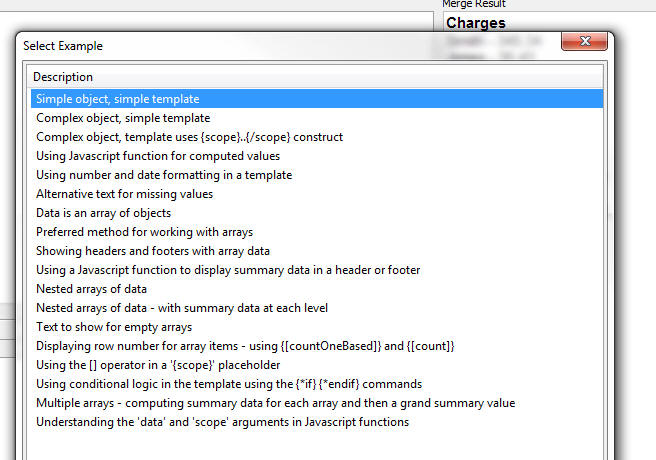
Whenever you open the Template Tester, the text that you had last entered is automatically restored.
The A5.u.template.expand() Javascript Function - Templates are expanded using the A5.u.template.expand() Javascript function, which is part of the Alpha Anywhere Javascript library.
The syntax is
var html = A5.u.template.expand(data,settings);
Where data is a the data array or object to be merged into the template and settings defines the template (and any partial templates).
For example:
var data = {firstname: 'Fred', lastname: 'Smith'};
var template = 'Hello {firstname} {lastname}';
var settings = {
template: template,
partials: ''
}
var html = A5.u.template.expand(data,settings)
NOTE: For an example that uses partials, see 'Partial Templates - {*partial partialName}' above.
A5.u.template.parse() Function - If a template is used multiple times in a component, you can pre-parse the template so that when the template needs to be expanded you can use the pre-parsed template for improved performance.
For example, take the following Javascript:
var data = {firstname: 'Fred', lastname: 'Smith'};
var template = 'Hello {firstname} {lastname}';
var settings = {
template: template,
partials: ''
}
var html = A5.u.template.expand(data,settings)
The could be re-factored as follows:
var data = {firstname: 'Fred', lastname: 'Smith'};
var template = 'Hello {firstname} {lastname}';
var parsedTemplate = A5.u.template.parse(template);
var settings = {
template: parsedTemplate,
partials: ''
}
var html = A5.u.template.expand(data,settings)
Action Javascript - Templates - Merge data into client-side template' Action - This action allows you to define a data and a template, merge the data into the template and then set the innerHTML of a div, placeholder control, or Panel with the resulting HTML.
Watch Video
Download Component
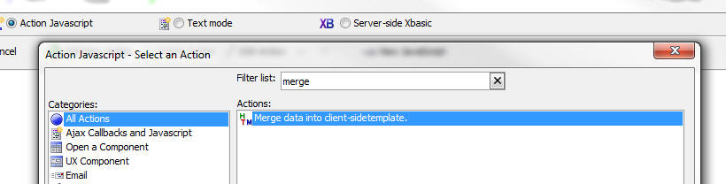
When you open the builder, the genie shows this screen:
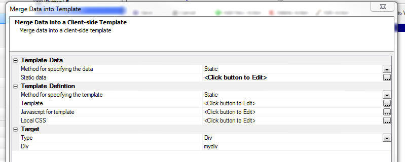
You can either specify static data to merge into the template, or you can specify the name of a Javascript function that will return the data to merge into the template.
Similarly, you can specify a static template, or the name of a Javascript function that will dynamically create the template.
Using Client-side Templates on the Server-side - a5_merge_JSON_into_template() Function - Because Alpha Anywhere has the ability to execute Javascript from an Xbasic script, you can actually use client-side templates in Xbasic using the a5_merge_JSON_into_template() function.
The syntax for the function is:
c Result = a5_merge_JSON_into_template(C jsonData
,C template [,C javascriptFunctions [,C partialTemplatesJSON
[,C localCSS ]]])
For example:
dim data as c
data = <<%txt%
{firstname: 'Fred', lastname: 'Jones'}
%txt%
template = <<%html%
Name: {firstname} {lastname}
%html%
htmlOut = a5_merge_JSON_into_template(data,template)
showvar(htmlOut)
{grid.object}.getRowsInGrid() Method - Returns the number of rows in the current page of the grid. This is not the same as the number of rows in the Grid query.
Previously, users were using the internal ._rowsInGrid property to get the number of rows in the current page, but this value includes rows that have been deleted.
For example, say that the Grid is set to show 10 rows per page and that the refresh method is set to 'Auto' and that a minimal refresh is done after update, insert and delete operations.
If the user deletes a row from the Grid, the ._rowsInGrid property will still be 10, because the deleted row is not really deleted from the current page - it is just hidden and marked as deleted.
On the other hand, the {grid.object}.getRowsInGrid() method will return 9.
{grid.object}.getSelectedRow() Method - Returns the selected row number, or null if no row is selected.
Previously, users were using the internal ._selectedRow property to get the row number of the currently selected row. However, under some circumstances this property can return a confusing (but technically correct) value.
For example, if the refresh method on the Grid is set to 'Auto' and a minimal refresh is done after an update, insert or delete operation and the user deletes a row, the ._selectedRow property will return the row number of the row that was just deleted (which is actually correct internally, because the row that was deleted has simply been hidden in the page and it is still marked as selected).
On the other hand. the {grid.object}.getSelectedRow() method will return null, indicating that no row is currently selected.
UX Component - List Control - List Preview - Modeless - The List Builder has a 'Preview' button to do a quick preview of the List control while you are in the List builder. The Preview window is now modeless - which means you can keep it open while you are working in the List builder (and perhaps move it to a second screen if your computer has two monitors). This makes it very convenient to preview the List after every change you make.
UX Component - List Virtualization - Normally, when a List control is populated, the HTML for all of the rows in the List is rendered. If the list only has a few rows (say 200 rows), then there is no noticeable delay while the List is populated.
However, if the List has a lot of rows (say several thousand rows), then there will be a noticeable delay while the List is populated and also, a large amount of memory will be consumed by the List. On a mobile device where memory is more limited, the amount of memory consumed by the List could be a problem.
List virtualization allows you to only create HTML elements for a portion of the List - the portion that is currently visible and some additional rows above and below the currently visible portion. The number of rows that are rendered in the List is called the 'page' size.
When the user is scrolling the List and they hit a page boundary, the user can tap on a Next or Previous button (or optionally use a pull/release gesture) to populate the List with the next or previous page of data. It is important to recognize that tapping the Next or Previous button does not trigger an Ajax callback. It is simply rendering the next or previous page of data using the data that has already been loaded into the List and is in memory. Therefore, the time take to populate the next or previous page is practically instantaneous.
The advantage of virtualizing the List is that you can dramatically reduce the time taken to load large Lists and you can reduce the memory footprint of the List.
To turn on List Virtualization, set the Virtualization type property shown below to 'Dynamic'.
Watch Video
Download component
Once you do this, several additional properties will be shown

Virtualization type - Set to 'None' to turn virtualization off. Set to 'Dynamic' to turn virtualization on.
Size - The size property defines the 'page' size - the number of rows of data that should be rendered. This should typically be a multiple of the number of rows in the viewport. For example, say that your List can display 20 rows of data at a time, you might set the size to (say) 100 so that the user can scroll a fair amount before hitting the page boundary.
When you reach a page boundary (either on top or bottom
of the page), there are 'Next' and 'Previous' buttons to
get the next logical 'page' of data. The user can either
tap on the Next/Previous button, or use a pull/release
action to fetch the next page of data.
Max size - This is an advanced optional setting
that can be used to specify a type of 'hybrid'
virtualization. By default, this property is set to 0,
which means that the number of rows that the List
renders is always equal to the 'page' size. When you hit
a page boundary, the current page is memory is replaced
by the next page that is loaded.
However, if you set the Max size to -1 (which indicates
that the max size is equal to the number of rows in the
List), or some positive number that is greater than the
size property, then when you are navigating
forward and you hit a page boundary, the next page of
data is automatically rendered (without requiring the
user to tap the Next button). The number of rows in
memory continues to grow as the user scrolls down in the
List. In other words, the memory consumed by the List is
initially very small (as only a single page of data are
rendered) and the time taken to render the List is
optimized (again, because only a single page of data are
rendered), but as the user scrolls, the number of
rendered rows in the List continue to grow and more
memory is consumed. When the 'max size' is reached, then
the user will then have to use the 'Next' button to
continue to viewing additional records.
Offset - When you hit a page boundary, and click
the Next/Previous button, the 'offset' indicates the
number of rows from the page that is being discarded
that should be included in the new view. If this number
is less than the number of rows in the viewport, the
List will appear to 'jump' when you navigate to a new
page. It is recommended that this value be set to a
minimum of the number or records that can be seen in the
viewport at one time so that when the user taps the
Next/Previous button, the scroll position of the List
does not change. It is recommended that this number be
no more than half of the 'page size'. The larger the
number, the more rows the user can scroll backwards
before hitting the Next/Previous buttons.
Navigate on pull - Allows the user to
pull/release to navigate (in addition to tapping on the
Next/Previous buttons).
Pull size - Number of pixels before the
'pull/release' gesture is recognized as a 'navigate'
action.
UX Component - List Control - onBeforePopulate and onPopulate Client-side events - Two new client-side events have been added to the List control.
onBeforePopulate - fires before the List is populated. Allows you to transform the data that will be used to populate the List. The event handler gets passed in 'data' - an array with all of the data for the List.
onPopulate - fires after the List has been populated.
UX Component - List Control - Transform Data Type - Unless the List data source is a Javascript function (in which case you have complete control over the data types for each field in the List), all data in the List are string values.
Watch Video
Download component
The 'Transform data type' property allows you to transform the data type of the data in a List column to a Date, Numeric, or Logical data type.
To transform the data type, set the option in the 'Transform data type' property on the Fields pane in the List builder (as shown below).

The benefit of transforming dates into true date objects and numbers into true number objects is that you can then use the template formatting options to format date or numeric values.
For example, the template for a date field might be specfied as:
{DateOfBirth:date('MM-dd-yyyy')}
or a numeric field, the template might be specified as:
{Price:number('$# ###.00')}
NOTE: It is not strictly necessary to transform a string to a number in order to use the number format directive in the template. The sample template shown above ( {Price:number('$# ###.00')} would actually also work on a string value that contained a valid number.
Property Grids - Font Size - Property Grids are ubiquitous in the Alpha Anywhere builders. You can now change the default font size by selecting the View, Settings... menu item. Select the 'System Font's pane and then the 'Property Grid' category.

The image below shows a Property Grid with a 12 point font size:

word_i() function - A case-insensitive version of the word() function
Example
?word_i("alpha software corp",2,"SOFTWARE")
= "corp"
Web Applications - Session Object - .SaveSessionFileToFile() - A new method on the session object allows you to save a file that as previously stored as a session file to a permanent location.
The syntax is
session.saveSessionFileToFile(c Key, C DestinationFile)
Note: The session file might have been created in the first place using either of these methods:
session.saveFileToSessionFile( c fileName, c key)
session.saveDataAsFile( b data, c key)
Storage - Storage is an Alpha Anywhere abstraction for dealing with different types of storage using a standard interface. Currently, 3 type of storage are supported - Amazon S3, Azure and Disk storage.
Storage is used for storing files.
To work with Storage you will need a storage connection string to 'connect' to the storage object.
Named connection strings are typically used (in much the same way that named AlphaDAO connection strings are used when you connect to a SQL database).
To create a named storage connection string, select the Tools, Storage Connection strings menu item from the Tools menu when the Web Control Panel has focus.

This will open a dialog where you can create as many named storage connection strings as you want.
When you create or edit a named storage connection string, the Connection String dialog is shown:

Named storage connection strings are published in the a5_application.a5i file when you publish your application.
Summary of Helper Functions for Working with Storage - Several Xbasic helper functions make it easy to work with the storage. These helper functions are written on top of the low level storage objects that are documented here.
The helper functions are:
Examples for each of these functions is shown below.
a5Storage_saveFile() - Saves a file to storage
Syntax:
L a5Storage_saveFile(C connectionString ,C filename ,C
itemName [,C mimeType [,* pResult ]] )
Where:
connectionString - Storage connection string with ::storage:: as a prefix.
filename - name of the local file to save in storage.
itemName - name of the object in storage. You can can specify a logical folder by using forward slashes in the name. For example: image/image1.jpg
mimeType - the mime type of the object. If you don't specify this property, the value can be inferred from the extension you assign to the itemName property.
pResult - an optional dot variable that you can pass in that will be populated with information about the object.
Example:
dim pr as p
flag = a5Storage_saveFile("::storage::Amazon_East","c:\images\4290.jpg","movies/4290.jpg","",pr)
?flag
= .T.
If you examine the pr dot variable that was passed into the function you will see the following properties:
hasError = .f.
timeTakenMilliseconds = 239
AbsolutePath = "https://
ContentType = "image/jpeg"
ModifiedTime = CTODT('03/15/2014 01:53:13 00 pm')
Name = "movies/4290.jpg"
size = 5880
The AbsolutePath property gives you a URL to the object. Note that in order for this URL to work you need to make sure that you have set the appropriate permissions on the storage container ('bucket' in S3 terminology).
a5Storage_saveData() - Saves data to storage
Syntax:
L a5Storage_saveData(C connectionString ,b blob ,C itemName [,C mimeType [,* pResult ]])
Same as a5Storage_saveFile(), except takes a blob as input rather than a filename.
A5Storage_getItemProperties() - Gets properties of an item in storage
Syntax:
P itemProperties = a5Storage_getItemProperties(C connectionString , C itemName)
Where:
connectionString - Storage connection string with ::storage:: as a prefix.
pResult - an optional dot variable that you can pass in that will be populated with information about the object.
Returns a dot variable with these properties
a5Storage_getItem_as_blob() - Retries data from an item in storage and put the data in a blob variable
Syntax:
b blob = a5Storage_getItem_as_blob(C connectionString ,C itemName [,* pResult ])
Where:
connectionString - Storage connection string with ::storage:: as a prefix.
pResult - an optional dot variable that you can pass in that will be populated with information about the object.
Example:
dim p3 as p
b3 = a5Storage_getItem_as_blob("::storage::Amazon_East","movies/4290.jpg",p3)
?b3.size()
?p3
'= contentType = "image/jpeg"
timeTakenMilliseconds = 297
a5Storage_getItem_as_file() - Retries data from an item in storage and create a local file
Syntax
L flag = a5Storage_getItem_as_file(C connectionString ,C itemName, C filename [,* pResult ])
Where:
connectionString - Storage connection string with ::storage:: as a prefix.
pResult - an optional dot variable that you can pass in that will be populated with information about the object.
a5Storage_listItems() - Lists items in storage
Syntax:
c List = a5Storage_listItems(C connectionString [, C searchPrefix [,* pResult ]])
Where:
connectionString - Storage connection string with ::storage:: as a prefix.
pResult - an optional dot variable that you can pass in that will be populated with information about the object.
a5Storage_deleteItem() - Delete an item from storage
Syntax:
L flag = a5Storage_deleteItem(C connectionString, C itemName [,* pResult ])
Where:
connectionString - Storage connection string with ::storage:: as a prefix.
itemName - name of item to delete
pResult - an optional dot variable that you can pass in that will be populated with information about the object.
Note: The flag value returned by this function is .f. if the connection failed, but is .t. if the item was not found in storage.
Web Applications - .A5W Pages - Debugging - You can now debug live running .A5w pages from within the HTML editor. The editor now has a new 'Live Preview' tab.
Simply insert a debug(1) statement in your Xbasic code and then switch to the 'Live Preview' tab pane.
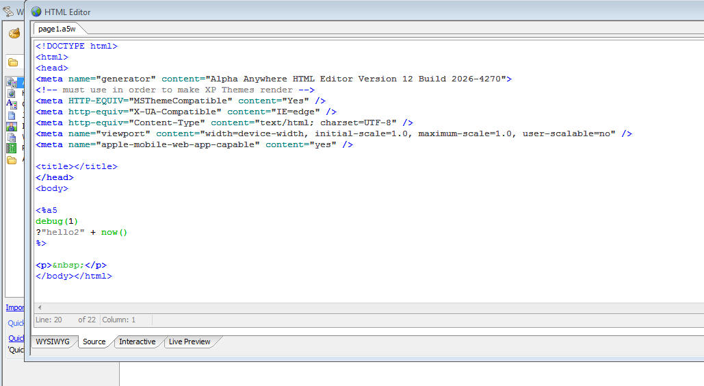
UX Component - Pop-up Javascript Windows - Customize Title Direction - A new property has been added to set the default title direction for pop-up Javascript windows. By default, the direction is 'ltr' (left to right), but the direction can now also be set to 'rtl' (right to left - title on right and close button on left).

Grid Component and UX Component - Image and File Upload - Show Progress and Allow Cancel - The image and file upload features in the UX and Grid components have been enhanced.
The image below shows the File Upload window showing progress as a large file is uploaded.

You can now:
Display progress while a file is uploading
Allow a user to abort the upload after the upload has started
Check the maximum allowed upload size before the upload is started. (Previously the file was uploaded and then if the uploaded file exceeded the maximum allowed size an error was returned to the user).
Check the allowed file types before the upload is started. (Previously the file was uploaded and then if the uploaded file was not of the correct type, an error was returned to the user).
In order to enable this new functionality, edit your Image Upload, File Upload or File Upload - User Defined actions (defined using Action Javascript) and set the properties shown below.

In the case of the 'File Upload - User Defined' when the 'Allow multiple files' option is selected, the size check that takes place before the upload begins is the combined size of all selected files. You can set the maximum combined size property in the builder. The 'Maximum file size' property which applies to individual files will also be enforced after all of the files have been uploaded.

The Action Javascript builders allows you to specify the style for the progress bar. The 'A5' style blends in nicely with the component style, but for older styles, such as GrBlue, GrOlive, etc. the 'A5' style might be too subtle for your taste and you might prefer to use the 'Basic' style, wich uses a standard HTML progress element.
The image below shows how the slider is rendered using the 'A5' option (first slider - using the iOS style) and the 'Basic' option (second slider).

Grid and UX Component - HTML Editor - File and Image Upload - The File and Image upload features in the HTML editor have been enhanced.
You can now:
Display progress while a file is uploading
Allow a user to abort the upload after the upload has started
Check the maximum allowed upload size before the upload is started. (Previously there was no way to specify a maximum file size).
Check the allowed file types before the upload is started. (Previously there was no way to specify allowed file types).
UX Componet - Slider Control - Displaying Progress - A new property on the slider control has been exposed that allows you to turn off the slider handle. This is useful for displaying 'progress'. In the image below the first Slider has its handle turned off.
When you want to use the slider to show progress, you should also disable it so that the user cannot change the value by clicking on the slider. For example, enter '1=2' as the client-side Enable expression for the slider.

UX Component - Tab Control - Genie Style - Genie Button Position - When defining 'Genie Style' tab controls (shows buttons to advance through the tabs), you can now specify the button position (Above or Below the Tab Panes). Previously, the buttons were always shown below the Tab Panes.
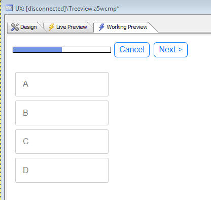
Xdialog - Edit Combo - Case-Insensitive - The edit combo in Xdialog is case-insensitive by default. You can now force it to be case sensitive using the new %CS% flag.
For example
dim selected as c = ""
dim colors as c
colors = a5.color_enum()
ui_dlg_box("Select Color",<<%dlg%
Color combo: [%CS%.50selected^+colors];
Color edit-combo: [%CS%.50selected^=colors];
%dlg%)
UX Component - Abstract Events - downHold Information - Click, Tab, Swipe, Etc. events now have additional information in the event's 'abstractData' object that tells you if a 'downHold' event occurred. The motivation for this additional information is to allow you to add code to Click, Tap and other abstract events to prevent them from executing their standard code when a downHold abstract event fires.
For example, if you examine the 'e' object that is available inside the event handler for a click abstract event, you will see the following information (screen shot taken from Visual Studio Javascript debugger). As the screen shows, the e.abstractData object has a property called 'downHold'. In this case the property is true, indicating that the click event has fired as a consequence of the downHold event firing.

You might then write your click event handler as follows
var flagRunCode = true;
if(typeof e.abstractData != 'undefined') {
if(e.abstractData.downHold) flagRunCode = false;
}
if(flagRunCode) {
//code you want to run in a pure click event
}
Code Editors - Search and Search and Replace - Regular Expressions - The Search and Search and Replace dialogs now support the ability to use regular expression. In addition, the history feature that shows previous search and replace values is now case-sensitive.
UX Component - Internationalization - List Controls - The UX component Internationalization genie (described later in this document), now allows you to add language and text dictionary tags to column headings for List controls.
Xbasic - Dot Variables - .data() Method - The .data() method can be used to read the value of a property in a dot variable. However, the .data() method trims trailing spaces. Now you can use an option to preserve trailing spaces by adding the '.raw' suffix to the property name.
delete p
dim p as p
p.name = " "
?"a" + p.name + "b"
= "a b"
?"a" + p.data("name") + "b"
= "ab"
?"a" + p.data("name.raw") + "b"
= "a b"
UX Component - List Control - Client-side Numeric Formats - You can now specify format directives in the template for the List control. For example, the image below the template for the 'longitude' column in the List.
Notice that the placeholder in the template shows:
{longitude:number('#.0'}
The numeric format is specified in the placeholder, separated from the field name by a colon.
The builder has a link labeled 'Insert format directive' that will open a genie to help you define formatting directives.
NOTE: In the screenshot shown below the List is a columnar List. Client-side format directives can also be inserted into the template for Freeform Layout Lists.
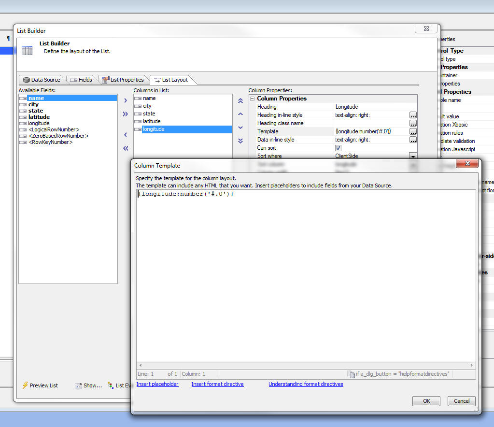
See 'UX and Grid Component - Client-side Calculated Fields - Builder' below for more information.
Xbasic - Image Metrics Class - The new Image
Metrics class gets both the pixel size and the logical
size of an image.
The logical size is expressed in twips, and reflects the
DPI stored with the image.
Example usage:
dim isize as Helper::ImageMetrics
isize.LoadImage("jpg",file.to_blob("C:\imgage.jpg"))
? isize
..
pixel_height = 1200
pixel_width = 1920
twip_height = 18000
twip_width = 28800
? *unit_convert(isize.twip_width,"tw","in")
= 20
? *unit_convert(isize.twip_height,"tw","in")
= 12.5
UX and Grid Component - Action Javascript - Open Grid
- The Action Javascript to "Open a grid component"
now has an option to set Autorefresh on focus if the
target is a TabbedUI Pane. When checked, the content in
the tab pane will be refreshed automatically every time
the pane gets focus.
UX and Grid Component - Masks - User Defined Formats - When you define a mask for an input control in either the UX or Grid you can select from a list of built-in masks, or you can define your own mask. Now, you can add your own entries to the list of built-in masks by creating a special text file in the executable folder. The text file must be called:
UserDefinedMasks.txt
The text in the file must be of this form:
{data=(000) 000-0000}US Phone number
{data=000-00-0000}Social Security Number
{data=00000}Zip code - 5 digit
{data=00000-0000}Zip code - 9 digit
{data=L0L 0L0}Postal Code - Canada
UX and Grid Builder - Live Preview - Caching - Previously if you made a change to CSS or linked Javascript files after previously having done a Live Preview in the builder, the changes were not always reflected because Internet Explorer was loading assets from its cache. Now, the builder is more aggressive about not caching assets during Live Preview.
UX Component - Internationalization - In order to
design a UX component that adapts automatically to
different languages, you typically wrap all labels in
either language tags (e.g.
A new Internationalization Utility makes it easy to retrofit an existing UX component with language or text dictionary tags.
To access the utility, click the Menu button, shown below.

Then, select the Internationalization Helper Utilities... menu option.
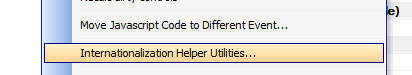
This will open a dialog that allows you to select different options. Each option generates some Xbasic code that will set properties on your UX component.
TabbedUI - onTabbedUIInitialize Server-side Event - The TabbedUI Component now has a new server-side event that fires when the TabbedUI component is initialized.
TIP: You can use this event to simulate session variables when you are in Working Preview. For example:
if eval_valid("request.SERVER_PROTOCOL") then
if request.SERVER_PROTOCOL = "A5RES" then
session.var1 = "simulated value for var1"
end if
end if
UX Component - Get Online Status - {dialog.object}._getOnlineStatus() Method - The
{dialog.object}._getOnlineStatus() method returns true if the device has an internet connection and false if there is no connection.
NOTE: The onConnectionChange client-side event fires when the connection state changes.
NOTE: For testing how your application will behave when there is no connection, you can set your component to simulate a disconnected state by calling the {dialog.object}._setSimulatedOnlineStatus() method.
UX Component - Set {dialog.object}SimulatedOnlineStatus() Method - Allows you to force the return value from the {dialog.object}._getOnlineStatus() method to be true or false, regardless of the true state of the connection. This is useful for testing purposes when you want to test how your component behaves when it is disconnected, even though you currently have a connection.
The syntax is
{dialog.Object}._setSimulatedOnlineStatus(mode);
Where the mode flag is
UX Component - Client-side Events -
onAjaxCallbackNotAvailable Event - A new client-side
event has been defined. The onAjaxCallbackNotAvailable
event fires if the user tries to execute some Javascript
that does an Ajax callback and the device is not
currently connected to the internet.
UX Component - Client-side Events - onConnectionChange Event - The onConnectionChange event fires whenever the device's connection status changes. For example if the device was online and the connection was lost, the event will fire, and vice versa.
NOTE: If you set the simulated connection status using the {dialog.object}._setSimulatedOnlineStatus() method, the event will also fire (assuming that the _setSimulatedOnlineStatus() method changed the simulated online status.
UX Component - Ajax Callback Action - Offline Javascript - A new property can be set when defining an Ajax Callback. The 'Offline Javascript' property allows you to define Javascript to be called when the device is not connected. This differs from the 'Ajax failed Javascript' property in that if the device is not connected, the Ajax callback is not even attempted, and the Javascript specified in the 'Offline Javascript' property is executed immediately.
On the other hand, the 'Ajax failed Javascript' is only fired after the timeout period if a response is not obtained from an Ajax callback.
NOTE: You can also use the new client-side onAjaxCallbackNotAvailable event to specify Javascript to execute when a user tries to make an Ajax callback and there is no connection.

UX Component - List Control - Filter Records - Range Searches - Using Action Javascript, you can create actions that filter the records shown in a List control. Now, you can easily make 'range' searches (similar to the Search Part in a Grid).
To define a 'range' search, select the control that has the 'range start' value first. Then, check the 'Range search' checkbox. A new prompt will be shown where you can specify the name of the control that has the 'range end' value.
Range searches can also be defined for actions that search embedded grids on a UX, retrieve primary keys for a data bound UK and print embedded reports.

UX Component - Absolute Layout Containers - Save as
PDF - You can now create a button using Action
Javascript to save the contents of the container to a
PDF file.
Watch Video
To create a button to save an Absolute Layout container as a PDF, use the 'Absolute Layout Container - Create PDF' action in Action Javascript.
After the PDF is created you have the option of either:

UX Component - Control Containers - Class Name and Prevent Float - When a UX component is rendered, every control in the component is wrapped in a DIV control that has a class of 'A5CWLayout'.
NOTE: If you have set the UX 'Layout type' property to be 'ControlWidth', then the class is A5container.
The A5CWLayout (or A5container) class has two important functions:
Under some circumstances a developer might want more control over the styling of the container (a DIV) that is used to enclose each control. Two new properties have been added for most of the controls in a UX:

The 'Control container class name' property allows you to specify the CSS class name that will be used in the container DIV in addition to the standard 'A5CWLayout' (or 'A5container') class.
The 'Control container prevent float' property allows you to specify if the container DIV will use the 'A5CWLayout' (or 'A5Container') class at all.
With these two new properties you have complete control over the styling of all controls on the UX.
NOTE: For controls that are in a 'NoFloat' container, the 'Control container prevent float' property is implicitly true.
UX Component - Panels - .Refresh() Method - Panel Cards and Panel Navigators now have a .refresh() method. This means that if you change the contents in the header or footer of the Panel (which might change the height of a header or footer, for example), you can now call the .refresh() method to layout out the Panel again, showing the new footer or height.
For example:
var pObj = {dialog.object}.panelGet('PANELCARD_1');
//some code to change the HTML shown in the Panel header or footer
pObj.refresh();
Xbasic - CURL - Built-in Support For CURL - CURL is a popular library for calling URLs. A genie is available to convert a CURL command that you might read in some API documentation into Xbasic. To open the CURL command to Xbasic genie, right click on whitespace in the Xbasic code editor or Interactive window. The select the CURL command to Xbasic command.

The genie open up and you can paste in a CURL command, then click the Generate Xbasic button.
The generated Xbasic instantiates the Curl object in the extension namespace.
NOTE: When using the HTTPS protocol, you must have a certificate. In the sample shown below the certificate in the CARoot folder in the Alpha Anywhere executable folder is used.
Grid Component - SQL - Search Part - Grids Based on GROUP BY Statements - If you have defined a Grid that is based on a SQL statement that has a GROUP BY clause, interpreting what the user intends when they do a search using the the Grid's Search Part can be tricky. For example, does the user intend the submitted search criteria to be used in a WHERE clause, or a HAVING clause?
Previously, if the Grid based based on a GROUP BY statement, the SQL generated by the Search Part was added to the HAVING clause.
Now, a more flexible approach is implemented.
When you define the Search Part in a Grid, for each field you add to the Search Part, you can define the Search Expression. The Search Expression is used in the generated SQL when the user searches on this field. If the search expression uses a summary operator (for example Sum(AmountDue) ), then a search on this field will go into the HAVING clause. On the other hand, if the Search Expression does not use a summary operator (for example, AmountDue), then a search on this field will go into the WHERE clause.
As a result of this change, you can define a Search Part in the Grid that will generate SQL statements that have both WHERE and HAVING clauses.
Grid and UX Component - Image and File Upload - Window Position - You can now set an explicit position for the file select window in these actions:
Reports - HTML Content - Base64 Encoded Embedded Images - If you have HTML content in a report and the HTML content has base64 encoded embedded images, the images will now render correctly in the printed report.
UX Component - List Control - Action Javascript - List Control Actions - Client-Side Order Expression - The genie now allows you to perform multi column sorts.
Set the 'Client-side sort mode' to Advanced and then use the smart field to define the sort definition.
You can define ascending or descending sorts and you can specify whether you want to sort on the whole field, or a subset (for example, just the first character of the field).

This gene generates Javascript that uses the .setOrder() method of the List. For example, here is how a mult-level (Customer, Country) sort would be defined:
var listObj = {dialog.object}.getControl('LIST1');
var sortObj = {'Country' : 1 , 'City' : 1};
listObj.setOrder(sortObj);
UX Component - List Control - Group Breaks - Client-Side - The List control has always had a Group Break option, but this option is a server-side group break. This means that the data that is sent from the server to the browser has the group breaks physically embedded into the List data.
Now, you can define client-side group breaks. These group breaks are inserted into the List on the client-side (after the List has been populated). Client-side group breaks offer several advantages over server-side group breaks. Namely:
NOTE: One advantage of server-side group breaks over client-side group breaks is when the List data source is based on a SQL query and you have turned on the List pagination option. In this case, summary data shown in a List header will be for all of the data in that group, not just the records that are currently visible in the List.
In the image below, the List has two levels of grouping: Country and City. Notice that a custom style has been defined for the second level group headers (showing the city name in blue, with a left padding of 50px).

Here is the same List, but this time showing some summary data in the top level group header:

To turn on client-side grouping for a List, check the 'Has client-side group breaks' property for the List as shown in the image below:
You can then click the smart field to open the 'Client-side Grouping' genie.
The genie allows you to define multiple levels of grouping.
For each group you define:

When you define the HTML for the header or footer, you can click the smart field button to open a genie. This genie has an option that makes it easy to include summary data in the header or footer. For example, in the image below, which shows the editor for the header HTML expression, the user has clicked on the 'Insert summary field' hyperlink, and the Summary Field Genie is displayed.

When you use the Summary Field genie, the generated Javascript that is inserted into the expression calls a special helper method of the List object. For example, here is the code to compute the average of the Price column:
this.groupSummary(data,'Price:N','avg')
Note: The .groupSummary() method ignores NULL values in the data.
In the example below, the average is computed and then formatted using a format string
Number(this.groupSummary(data,'Price:N','avg')).toFormat('# ##0,00')
UX Component - List Navigator - When you have a lot of records in a List, scrolling the List to the bring a section of the List into view can be tedious - especially on mobile devices where there is no vertical scroll bar. The List Navigator makes it easy to scroll a List that has group breaks. In the image below a List is shown with group breaks on the first character of the Contactname field. A List Navigator is shown on the right side of the List.
NOTE: You can only display a Navigator if the List has group breaks. It does not matter, however, if the group breaks are computed server-side or client-side.
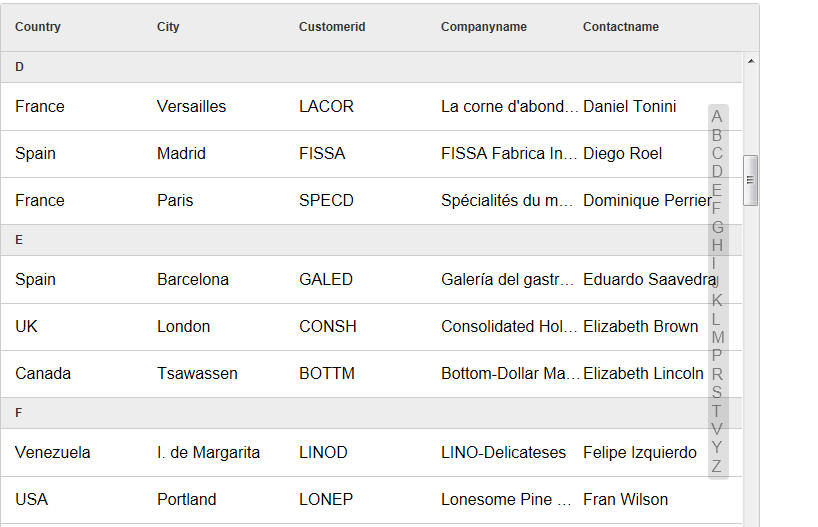
The user can drag on the Navigator to quickly scroll the List.
The Navigator has an entry for each Group Heading.
The Navigator can be positioned on the left, right, top or bottom of the List. Positioning the Navigator on the top or bottom is generally done when the List is set to scroll horizontally.
You have complete control over the size of the Navigator (when it is not in use) and its position (relative to to the edge of the List). The size of the Navigator when it is in use (i.e. when the user is dragging on it), is automatically determined by its contents. If the size of the Navigator (when it is not in use) is not wide enough (for left/right position), or high enough (for top/bottom position) to show its full contents when the user starts to drag on it, it will dynamically resize while it is in use and then go back to the smaller size when the user stops dragging on it.
To define a Navigator for a List, check the 'Has List Navigator' property on the List Properties pane of the List Builder. Then click the smart field to open the genie.
The List Navigator builder (shown above) allows you to define a Javascript expression that determines what data are put into the Navigator. You expression can reference the special html field. The html field contains the HTML that is shown in the Group Header.
In the above screen show, the HTML expression is:
html
This means that if the Group Headers in the List contain:
A
B
C
D.....
The Navigator will also contain the exact same values.
But, if the HTML expression was:
html.toLowerCase()
The Navigator would contain:
a
b
c
d...
UX Component - List Control - Action Javascript - List Control Actions - Client-side Group Breaks - A new action has been added to the List Control Actions genie that allows you to apply client-side Group Breaks to a List. The user interface for the Genie is identical to the user interface for client-side group breaks in the List Builder. See the section 'UX Component - List Control - Group Breaks - Client-Side' for more details.
UX Component - List Control - Action Javascript - List Control Actions - Show Navigator/Hide Navigator - New actions have been added to the List Control Actions genie that allow you to show a List Navigator for any list that has group breaks and to hide a previously shown List Navigator.
UX Component - List Control - Client Side Filter and Order Expressions - You can now define a client-side filter and order for any List. The client-side filter is applied to the data when it is loaded into the List. If you have defined a server-side filter/order, the client-side filter will be applied in addition to the server side filter/order.

UX Component - Lookup Columns - You can display columns in a List where the data in the column is 'looked' up in another List, or by calling a Javascript function.
Watch Video
Download Component (You will need to change the connection string
for both lists to point to the sample Northwind database).
Consider the following example. The image shows a List based on the Order Details table in the sample Northwind database. Notice that the List shows the ProductId, but not the ProductName.
It would be nice to show the Product Description in the List, as shown in the image below:

Obviously this could be done by specifying a SQL join for the List data source where the Order Detail table was joined with the Products table. However, this would mean that much more data would have to be sent over the network as every row of data in the List would include the Product Description field.
A much better approach would be to 'look up' the data on the client-side as the List was being rendered. You might create a second List based on the Products table that has the ProductId and ProductDescription fields in it.
To define a Lookup, click the smart field for the 'Lookup columns' property on the 'List Properties' pane in the List Builder.
This will open the Lookup Columns genie. You can define as many lookups as you want.
Each lookup must have a unique name. The lookup type is either 'List' or 'Function'.
A 'List' lookup will lookup the value in another List. You can Link the list to the Lookup List on one or more fields.
IMPORTANT: The List that is used as the data source must appear in the UX builder before the List that references it. For example, if the OrderDetails List lookups up values in the Products List, the Products List must appear before the OrderDetails List in the UX builder.
A 'Function' lookup will call a Javascript function that you define and return either a single value, or an object (with multiple values). Data from the current row in the List is passed into the Javascript function. You specify what data from the current row is passed into the Javascript function by setting the 'Lookup field(s)' property in the Lookup Columns builder.
If you specify more than one lookup field (for example, 'Firstname' and 'Lastname'), the lookup fields are passed into the Javascript function in an array. If there is only one lookup field, the value is passed into the Javascript function as a string. Here is an example of a very simple Javascript function that takes an array of input values:
function myLookupFunction(idValues) {
if(idValues[0] == 'John' && idValues[1] == 'Smith') return 'value1';
if(idValues[0] == 'John' && idValues[1] == 'Jones') return 'value12;
return 'Value not found'
}

Once you have defined the Lookup, the fields from the Lookup are available in the 'Available Fields' list in the List Builder.
Notice in the image above, the 'Lookup Name' was set to 'products'.
Notice in the image below the available fields include:
The 'products' prefix is derived from the 'Lookup Name'. The list of available fields includes all of the fields in the Lookup List.
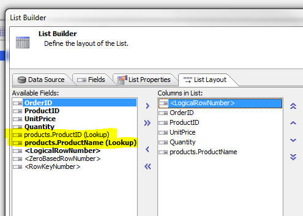
UX Component - Buttons - Split Buttons - A new option on the Button control allows you to easily create 'split' buttons. A 'split' button has a 'button' part and a 'down' part. You can define different event handlers depending on which part of the button the user clicked on.
Watch Video - Part 1
Watch Video - Part 2
Watch Video - Part 3
Download components
To define a split button, set the 'Display as split button' property

In your Javascript event handler you can reference
arguments[1]
If the user clicked on the button, arguments[1] is set to 'normal'
If the user clicked on the dropdown arrow, arguments[1] is set to 'split'.
IMPORTANT: You can only reference the arguments[1] parameter if your code is in the button's 'onClick' event. If you use the abstract 'click' event, then arguments[1] is not set to 'normal' or 'split'.
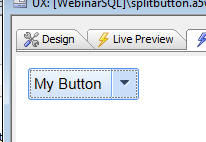
A typical use case for a split button is to display a menu when the user clicks on the down arrow. The user makes a selection from the menu, the action is performed AND the button is updated to show the action the user selected. The next time the user wants to perform the same action, a single click on the button will perform the action (rather than clicking on the down arrow and having to select from the menu).
The relevant methods that the menu can use to update the text in the button are:
For example:
var btn = {dialog.object}.getControl('button1');
btn.setContent( { html : 'New Button Text', tip: 'Help for button', icon: 'mynewicon.jpg'});
In some case, when the down arrow has been pressed, you might want to open a modal window and while the window is open you might want to show the button in a 'depressed' state, For example, notice the difference in the image below compared with the image above:

To set the state of a button to depressed or normal, you can use the
The syntax is:
<buttonObj>.setState( pointerToButtonElement, true/false);
where true indicates the button is depressed and false returns the button to its normal state.
For example, assume the button Id is 'BUTTON_1';
var bEle = {dialog.object}.getPointer('BUTTON_1');
var bObj = {dialog.object}.getControl('BUTTON_1');
bObj.setState(bEle,true);
Application Server - Security Framework - Large Applications - The time to load security framework information for large applications has been significantly improved. In a test of a large application with 5,000 pages, each of which had security settings, the the time improvement is 2 orders of magnitude. To take advantage of this change, you must republish something in your application.
If a project is published from the latest pre-release to an older application server, the older application server will report a 500 internal server error as it won't be able to read the new file. The application server should be the same build as the development program.
SQL Query Builder - Column Alias Naming - When you build a SQL query that involves multiple tables and you select a column with the same name from multiple tables, Alpha Anywhere automatically assigns an alias to the column so that it has a unique name. The alias is a numeric suffix (e.g. CustomerID1). Now, you can specify if you prefer to use a table alias in the generated column alias. To set you preference, click the Preferences hyperlink in the image shown below.

PhoneGap - Support for the PhoneGap Build service is now tightly integrated into Alpha Anywhere.
PhoneGap is an open source product that allows you to build native applications for mobile devices. PhoneGap Build is a web service offered by Adobe that allows you to create native applications that use PhoneGap without having to install the device SDK on your machine, or in the case of iPhone/iPad apps, without even having to use a Mac.
PhoneGap creates a native application with an embedded browser control. Your Alpha Anywhere mobile app runs in the embedded browser, but has access to all of the native features of the phone that are exposed by PhoneGap.
To bring up the PhoneGap genie, click the PhoneGap button on the Web Control Panel toolbar.
You can download the documentation for the PhoneGap Build genie here.
For more information on PhoneGap, go to http://phonegap.com/

Web Applications - Security Framework - SQL Databases - The Web Application Security framework allows you to store the account information for the users and groups in your security framework in either .dbf tables or a SQL database. Previously, configuring the Web Security Framework to use SQL tables was a manual process, described in the following document:
http://wiki.alphasoftware.com/Using+SQL+tables+in+Web+Security
Now, a new genie makes it easy to configure the Security Framework to use SQL tables for your user and groups list. The genie also make it easy for you switch a previously configured Security Framework from .dbf tables to SQL tables without loosing any data.
When you edit your Security Properties (by clicking the Web Security button when the Web Control Panel has focus), the dialog now has a new property called 'Security Table Type', as shown in the image below.
If you select the 'SQL' option, then when you close the Security Settings dialog, a genie is launched (see screens below) to walk you through the process. The genie will prompt for a connection string and then will create the necessary security tables in your target SQL database.
If you are switching from .dbf security tables to SQL security tables, the genie will transfer your existing data to the SQL database.
NOTE: Remember, the genie will only be started once you close the Security Settings dialog and only if you have not previously configured security settings, or you are changing from .dbf to SQL tables. If you have previously configured your Security Settings to use SQL tables and you edit your security settings, the genie will not be started when you cloe the Security Settings dialog.
NOTE: The genie creates new tables in your SQL database. Mapping to existing tables is not supported.
TIP: If you want to change the SQL database in which your account information is stored you should first convert to use .dbf tables. That will import all of your existing account information into .dbf tables. The convert back to SQL. This will then export the data in the temporary .dbf tables to the new target SQL database.

After you click the OK button to close the Security Settings dialog, the Web Security Tables Upsize Genie is started.


AlphaDAO -
AlphaDAO - ODBC Connection String - DSN Less Connections - You can now create ODBC connections that do not use a DSN.
At the Data Source Name prompt in the Connection String
builder, select
When bypassing the DSN, you must provide the driver name by adding Driver='' as an additional parameter:
Example:
Driver='{Microsoft Paradox Driver (*.db )}'
For the generic ODBC API Alpha Anywhere populates the following parameters in the ODBC connection string if the we encounter corresponding values in the Alpha Anywhere connection string:
Prompt
SQL_DRIVER_NOPROMPT
NoPrompt SQL_DRIVER_PROMPT
Complete SQL_DRIVER_COMPLETE
Required SQL_DRIVER_COMPLETE_REQUIRED
See the Microsoft documentation for ODBC for a complete explanation of these
options.
Here is an example of an Access connection string and the equivalent DSN-less connection string that Alpha Anywhere automatically creates behind the scenes when the first connection string is used.
Connection String using the built-in Access option in the Connection String builder:
{A5API=Access,FileName='C:\temp\Northwind.mdb',A5TraceSQL=Y}
DSN-less ODBC connection string:
{A5API='ODBC',A5Syntax='Access',A5TraceSQL=Y,Driver='{Microsoft
Access Driver (*.mdb, *.accdb)}',DBQ='c:\temp\Northwind.mdb',ExtendedAnsiSQL=1,ImplicitCommitSync=Yes,UserCommitSync=Yes}
a5_show_htmlChrome() Function - Desktop Applications - Opens an Xdialog window and display HTML content using the embedded Chrome browser. Contrast with the existing a5_show_html() function that uses the IE activex control.
For example, consider the following script in a desktop application
dim html as c
html = <<%html%
Hello World
%html%
a5_show_htmlChrome(html)
UX and Grid Component - Styles - iOS7 and Android - New styles are included for iOS7 and Android. For Android, two styles are included - AndroidDark and AndroidLight.
IMPORTANT: If you are converting an existing
component that previously used the iOS style to iOS7,
AndroidDark or AndroidLight you will notice that the
'disclosure icons' on the right edge of your List
controls do not render properly. Also, if your component
was built using the Demo Mobile App that ships with
Alpha Anywhere, the Menu List control might not render
properly. Here is how to fix these two issues.
To fix the List template, edit the template and replace
the disclosure icon in the template with
{images.dialog.listNavSubtle}
or {images.dialog.listNav}.
The fixed HTML will then look like this:
To fix the Menu List, edit the Window container that
contains the Menu List and check the HTML template in
the Header HTML
property. This property is in the
Optional Window
Parts
section. Edit this template and make sure that
the following HTML markup exists at the end of the
template HTML:
 |
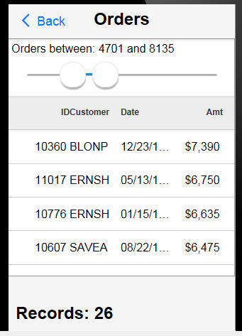 |
 |
|
 |
 |
A particularly attractive feature of these new styles is the way that the icons in the style are rendered. Instead of using bitmaps for the icons, the styles use CSS Icons (also called Font Icons because the icons are all included in a special font file that is included as part of the style).
See below for more information on CSS Fonts in general and on Font-Awesome in particular. Font-Awesome is an open-source Font Icon that is now bundled with Alpha Anywhere.
UX, Grid and TabbedUI Components - CSS Icons (Icon Fonts) - Support has been added for CSS Icons (also know as Icon Fonts) - Icon fonts have become very popular, especially for mobile applications because they scale smoothly, and are smaller than bitmaps. Also, there are many libraries of icon fonts that can be used with Alpha Anywhere.
In the image below, the two icons in the buttons are both CSS Icons rendered using the Icon Fonts that come with the iOS7 style.
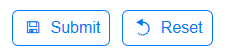
An icon font is just a regular font, excepting that instead of displaying characters, such as 'a', 'b', 'c', etc., the font has icons at each character position. So, assuming that the font defines a 'save' icon for character 'a', then in order to display the 'save' icon on your component, you would display the character 'a', and set its style to use the Icon Font.
Remembering that the 'save' icon corresponds to the character 'a', would be tedious, so a corresponding CSS file is defined. This CSS file has two main purposes:
For example, the CSS might define a rule called 'icon-save' that indicates what character the 'save' icon is mapped to.
When defining an image for a control (for example a button), you would indicate that the image name is:
cssIcon=icon-save
When the component is rendered the HTML markup, might look like this:
This HTML markup is then automatically translated by Alpha Anywhere to:
which correctly renders the icon using the appropriate character in the Icon Font.
You can also define an inline style for the CSS Icon. For example, if you define the image name as:
cssIcon=icon-save {color: blue;}
then, when this is translated automatically, the HTML becomes:
UX, Grid and TabbedUI Components - Font-Awesome Icon Font Library - Font-Awesome is a popular open-source icon font library. Alpha Anywhere now comes with Font-Awesome pre-installed. The Font-Awesome library is installed in the CSSIcons folder in the folder where the Alpha Anywhere executable is installed.
For more information on Font-Awesome, please go to:
In order to use any icons in the Font-Awesome library, (or in any 3rd party CSS Icon Library) you must set a property in the UX, Grid or Tabbed UI builder to indicate that the library should be loaded. Click the smart field button for the CSS (Font) Icons property to open the dialog that allows you to select which CSS Icon library you want to load.

NOTE: When you close the 'Select CSS Icon Libraries to Load' dialog shown in the above image, the library files are copied from the CSSIcons folder in your executable folder to the CSS folder in your Web Project. Because the CSS Icon library files are then part of your Web Project, they will be automatically published when you publish your application.
Once you have indicated the libraries that you want to load, any time you are prompted for the name of an icon, you can select a regular bitmap, or a CSS Icon. For example, note the 'CSS Icon' option on the Image selector:
If you select the CSS Icon option you can select the icon source. If you are using a style that uses icon fonts (for example the iOS7, AndroidLight, or AndroidDark styles), the ImageSource list will show
{kind=link}